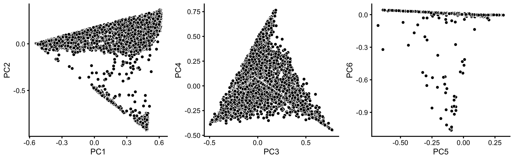
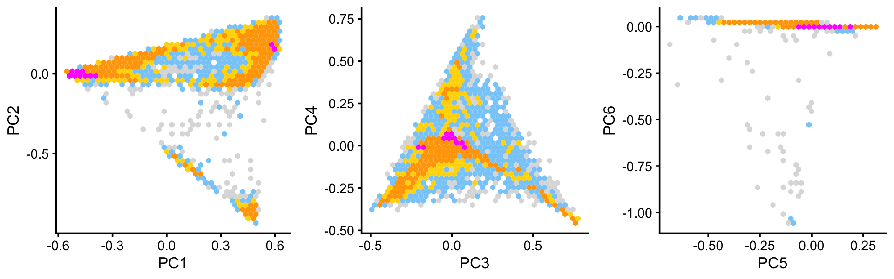
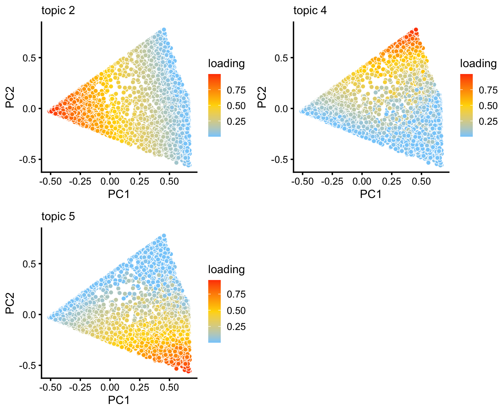
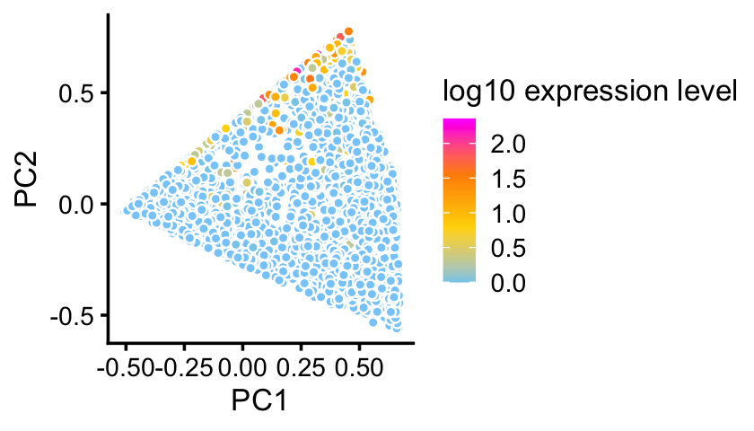
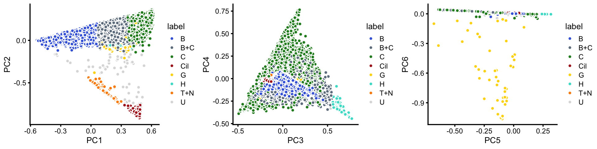
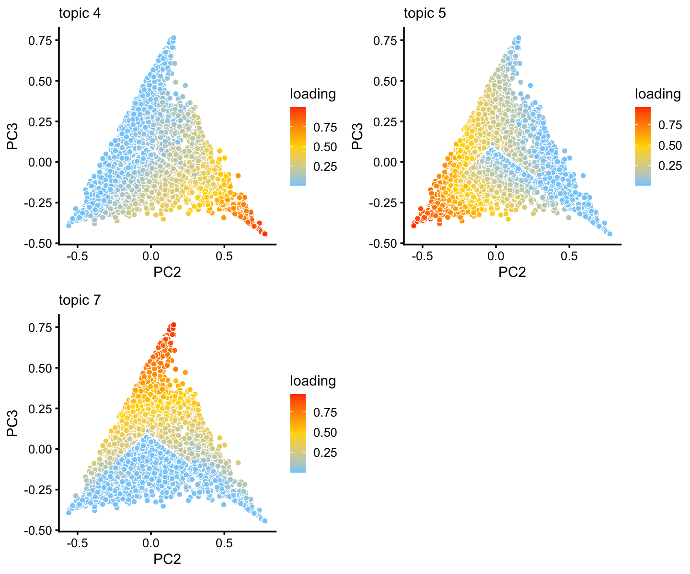

Identify clusters in droplet data using topic model
Peter Carbonetto
Last updated: 2020-09-21
Checks: 7 0
Knit directory: single-cell-topics/analysis/
This reproducible R Markdown analysis was created with workflowr (version 1.6.2.9000). The Checks tab describes the reproducibility checks that were applied when the results were created. The Past versions tab lists the development history.
Great! Since the R Markdown file has been committed to the Git repository, you know the exact version of the code that produced these results.
Great job! The global environment was empty. Objects defined in the global environment can affect the analysis in your R Markdown file in unknown ways. For reproduciblity it’s best to always run the code in an empty environment.
The command set.seed(1) was run prior to running the code in the R Markdown file. Setting a seed ensures that any results that rely on randomness, e.g. subsampling or permutations, are reproducible.
Great job! Recording the operating system, R version, and package versions is critical for reproducibility.
Nice! There were no cached chunks for this analysis, so you can be confident that you successfully produced the results during this run.
Great job! Using relative paths to the files within your workflowr project makes it easier to run your code on other machines.
Great! You are using Git for version control. Tracking code development and connecting the code version to the results is critical for reproducibility.
The results in this page were generated with repository version 605b540. See the Past versions tab to see a history of the changes made to the R Markdown and HTML files.
Note that you need to be careful to ensure that all relevant files for the analysis have been committed to Git prior to generating the results (you can use wflow_publish or wflow_git_commit). workflowr only checks the R Markdown file, but you know if there are other scripts or data files that it depends on. Below is the status of the Git repository when the results were generated:
Ignored files:
Ignored: data/droplet.RData
Ignored: data/pbmc_68k.RData
Ignored: data/pbmc_purified.RData
Ignored: data/pulseseq.RData
Ignored: output/droplet/fits-droplet.RData
Ignored: output/droplet/rds/
Ignored: output/pbmc-68k/fits-pbmc-68k.RData
Ignored: output/pbmc-68k/rds/
Ignored: output/pbmc-purified/fits-pbmc-purified.RData
Ignored: output/pbmc-purified/rds/
Ignored: output/pulseseq/fits-pulseseq.RData
Ignored: output/pulseseq/rds/
Untracked files:
Untracked: analysis/clustering-droplet.rds
Note that any generated files, e.g. HTML, png, CSS, etc., are not included in this status report because it is ok for generated content to have uncommitted changes.
These are the previous versions of the repository in which changes were made to the R Markdown (analysis/clusters_droplet.Rmd) and HTML (docs/clusters_droplet.html) files. If you’ve configured a remote Git repository (see ?wflow_git_remote), click on the hyperlinks in the table below to view the files as they were in that past version.
| File | Version | Author | Date | Message |
|---|---|---|---|---|
| Rmd | 605b540 | Peter Carbonetto | 2020-09-21 | workflowr::wflow_publish(“clusters_droplet.Rmd”) |
| html | db6135c | Peter Carbonetto | 2020-09-21 | Added B+C cluster to clustering of droplet data, and added plot |
| Rmd | 69d1f0a | Peter Carbonetto | 2020-09-21 | workflowr::wflow_publish(“clusters_droplet.Rmd”) |
| Rmd | e2a8071 | Peter Carbonetto | 2020-09-20 | Saved new clustering-droplet.rds. |
| html | b5e1a7e | Peter Carbonetto | 2020-09-20 | Fixed up Structure plot in clusters_droplet analysis. |
| Rmd | b7d1acc | Peter Carbonetto | 2020-09-20 | workflowr::wflow_publish(“clusters_droplet.Rmd”) |
| html | 4172024 | Peter Carbonetto | 2020-09-20 | Identified H cluster in droplet data. |
| Rmd | decefd4 | Peter Carbonetto | 2020-09-20 | workflowr::wflow_publish(“clusters_droplet.Rmd”) |
| html | 5361fdf | Peter Carbonetto | 2020-09-19 | Adjusted the plots in clusters_droplet analysis. |
| Rmd | 7830b35 | Peter Carbonetto | 2020-09-19 | workflowr::wflow_publish(“clusters_droplet.Rmd”) |
| html | 311b4e8 | Peter Carbonetto | 2020-09-19 | Made a few minor improvements to the clusters_droplet analysis. |
| Rmd | ba90d80 | Peter Carbonetto | 2020-09-19 | workflowr::wflow_publish(“clusters_droplet.Rmd”) |
| html | b1cb82e | Peter Carbonetto | 2020-09-19 | Added clustering from PCA plots to clusters_droplet analysis. |
| Rmd | 81e7faf | Peter Carbonetto | 2020-09-19 | workflowr::wflow_publish(“clusters_droplet.Rmd”) |
| Rmd | c8dd3af | Peter Carbonetto | 2020-09-16 | Implemented basic_pca_plot; improved labeled_pca_plot function. |
Here we perform PCA on the topic proportions to identify clusters in the droplet data.
Load the packages used in the analysis below, as well as additional functions that we will use to generate some of the plots.
library(dplyr)
library(fastTopics)
library(ggplot2)
library(cowplot)
source("../code/plots.R")Load data and results
Load the droplet data.
load("../data/droplet.RData")Load the \(k = 7\) Poisson NMF model fit.
fit <- readRDS("../output/droplet/rds/fit-droplet-scd-ex-k=7.rds")$fitIdentify clusters from principal components
To identify clusters, we begin by plotting PCs computed from the topic proportions. (Note that only 6 PCs are needed for 7 topics.)
p1 <- basic_pca_plot(fit,1:2)
p2 <- basic_pca_plot(fit,3:4)
p3 <- basic_pca_plot(fit,5:6)
plot_grid(p1,p2,p3,nrow = 1,ncol = 3)
| Version | Author | Date |
|---|---|---|
| b1cb82e | Peter Carbonetto | 2020-09-19 |
Some of the structure is more evident from “hexbin” plots showing the density of the points.
bins <- c(0,1,5,10,100,Inf)
p4 <- pca_hexbin_plot(fit,1:2,bins = bins) + guides(fill = "none")
p5 <- pca_hexbin_plot(fit,3:4,bins = bins) + guides(fill = "none")
p6 <- pca_hexbin_plot(fit,5:6,bins = bins) + guides(fill = "none")
plot_grid(p4,p5,p6,nrow = 1,ncol = 3)
| Version | Author | Date |
|---|---|---|
| b1cb82e | Peter Carbonetto | 2020-09-19 |
From these PCA plots, we define 4 clusters, labeled A, Cil, G and T+N. (The reasoning behind these labels will become clear later.) Points that do not fit in any of these clusters are assigned to a “background cluster”, labeled U.
pca <- prcomp(poisson2multinom(fit)$L)$x
x <- rep("U",nrow(pca))
pc1 <- pca[,1]
pc2 <- pca[,2]
pc6 <- pca[,6]
x[pc2 > -0.15] <- "A"
x[pc1 > 0.3 & pc2 < -0.75] <- "Cil"
x[pc1 <= 0.3 & pc2 >= -0.75 & pc2 < -0.4] <- "T+N"
x[pc6 < -0.05] <- "G"There is additional substructure in cluster A, which is more apparent in the projection onto the top 2 PCs computed from cluster A only.
rows <- which(x == "A")
fit2 <- select(poisson2multinom(fit),loadings = rows)
p7 <- basic_pca_plot(fit2,1:2)
p8 <- pca_hexbin_plot(fit2,1:2,bins = bins) + guides(fill = "none")
plot_grid(p7,p8)
The variation in PCs 1 and 2 is mostly produced by topics 2, 4 and 5.
p9 <- pca_plot(fit2,pcs = 1:2,k = c(2,4,5))
print(p9)
Topic 4 in particular corresponds closely to expression of Krt13 which was identified as being uniquely expressed by transitional “hillock” cells.
pca <- prcomp(fit2$L)$x
pc1 <- pca[,1]
pc2 <- pca[,2]
pdat <- data.frame(PC1 = pc1,
PC2 = pc2,
Krt13 = log10(counts[rows,"Krt13"]))
p10 <- ggplot(pdat,aes(x = PC1,y = PC2,fill = Krt13)) +
geom_point(shape = 21,color = "white",size = 1.25) +
scale_fill_gradientn(colors = c("skyblue","gold","darkorange","magenta"),
na.value = "lightskyblue") +
theme_cowplot(font_size = 10) +
labs(fill = "log10 expression level")
print(p10)
We label the three more-or-less distinct subclusters as B, C and H, and assign the remaining “in between” data points to a new “background cluster”, B+C.
y <- rep("B+C",nrow(pca))
y[pc1 < 0.1] <- "B"
y[pc1 > 0.4 & pc2 < 0.45] <- "C"
y[pc2 > 0.55] <- "H"
x[rows] <- yIn summary, we have subdivided the droplet data into 8 subsets.
samples$cluster <- factor(x,c("B","C","B+C","H","Cil","T+N","G","U"))
cluster_colors <- c("royalblue","slategray","forestgreen","firebrick","gold",
"turquoise","darkorange","gainsboro")
p11 <- labeled_pca_plot(fit,1:2,x,cluster_colors,font_size = 8)
p12 <- labeled_pca_plot(fit,3:4,x,cluster_colors,font_size = 8)
p13 <- labeled_pca_plot(fit,5:6,x,cluster_colors,font_size = 8)
plot_grid(p11,p12,p13,nrow = 1,ncol = 3)
| Version | Author | Date |
|---|---|---|
| db6135c | Peter Carbonetto | 2020-09-21 |
The clusters identified here correspond well to the Montoro et al (2018) clustering, with some exceptions (e.g., we do not identify an ionocytes cluster, and the neuroendocrine and tuft cells are included in the same cluster).
with(samples,table(tissue,cluster))
# cluster
# tissue B C B+C H Cil T+N G U
# Basal 3682 16 142 5 0 0 0 0
# Ciliated 1 13 4 0 371 5 0 31
# Club 93 1878 411 192 0 0 2 2
# Goblet 2 20 1 0 0 0 42 0
# Ionocyte 9 0 1 0 0 1 1 14
# Neuroendocrine 27 4 6 0 0 51 0 8
# Tuft 27 5 5 0 1 111 2 7Structure plot
The structure plot summarizes the topic proportions in each of these 8 subsets:
set.seed(1)
topic_colors <- c("gold","royalblue","salmon","turquoise","olivedrab",
"firebrick","forestgreen")
topics <- c(3,4,5,1,7,2,6)
rows <- sort(c(sample(which(samples$cluster == "B"),800),
sample(which(samples$cluster == "C"),800),
which(samples$cluster == "B+C"),
which(samples$cluster == "H"),
which(samples$cluster == "Cil"),
which(samples$cluster == "T+N"),
which(samples$cluster == "G"),
which(samples$cluster == "U")))
p14 <- structure_plot(select(poisson2multinom(fit),loadings = rows),
grouping = samples[rows,"cluster"],
topics = topics,colors = topic_colors[topics],
perplexity = c(70,70,30,30,50,30,12,18),
n = Inf,gap = 30,num_threads = 4,verbose = FALSE)
print(p14)
Based on this structure plot, and the above results, we roughly subdivide the droplet data into two: (1) the Cil, T+N and G clusters that give rise to well-separated clusters, and (2) the B, C, B+C and H subsets that contain interesting substructure but much less distinct clustering. Therefore,the cluster labels B, C, B+C and H are useful as a guide but should be taken with a grain of salt as the boundaries between these clusters are somewhat arbitrary.
Note the distribution of the topics in cluster C that there is further substantial heterogeneity in these cells beyond what can be captured by hard clustering. In particular, there is additional continuous variation in gene expression primarily captured by topics 5 and 7:
rows <- which(is.element(x,c("B","C","H","B+C")))
fit2 <- select(poisson2multinom(fit),loadings = rows)
p15 <- pca_plot(fit2,pcs = 2:3,k = c(4,5,7))
print(p15)
Save results
Save the clustering of the droplet data to an RDS file.
saveRDS(samples,"clustering-droplet.rds")
sessionInfo()
# R version 3.6.2 (2019-12-12)
# Platform: x86_64-apple-darwin15.6.0 (64-bit)
# Running under: macOS Catalina 10.15.6
#
# Matrix products: default
# BLAS: /Library/Frameworks/R.framework/Versions/3.6/Resources/lib/libRblas.0.dylib
# LAPACK: /Library/Frameworks/R.framework/Versions/3.6/Resources/lib/libRlapack.dylib
#
# locale:
# [1] en_US.UTF-8/en_US.UTF-8/en_US.UTF-8/C/en_US.UTF-8/en_US.UTF-8
#
# attached base packages:
# [1] stats graphics grDevices utils datasets methods base
#
# other attached packages:
# [1] cowplot_1.0.0 ggplot2_3.3.0 fastTopics_0.3-175 dplyr_0.8.3
#
# loaded via a namespace (and not attached):
# [1] ggrepel_0.9.0 Rcpp_1.0.5 lattice_0.20-38
# [4] tidyr_1.0.0 prettyunits_1.1.1 assertthat_0.2.1
# [7] zeallot_0.1.0 rprojroot_1.3-2 digest_0.6.23
# [10] R6_2.4.1 backports_1.1.5 MatrixModels_0.4-1
# [13] evaluate_0.14 coda_0.19-3 httr_1.4.1
# [16] pillar_1.4.3 rlang_0.4.5 progress_1.2.2
# [19] lazyeval_0.2.2 data.table_1.12.8 irlba_2.3.3
# [22] SparseM_1.78 hexbin_1.28.0 whisker_0.4
# [25] Matrix_1.2-18 rmarkdown_2.3 labeling_0.3
# [28] Rtsne_0.15 stringr_1.4.0 htmlwidgets_1.5.1
# [31] munsell_0.5.0 compiler_3.6.2 httpuv_1.5.2
# [34] xfun_0.11 pkgconfig_2.0.3 mcmc_0.9-6
# [37] htmltools_0.4.0 tidyselect_0.2.5 tibble_2.1.3
# [40] workflowr_1.6.2.9000 quadprog_1.5-8 viridisLite_0.3.0
# [43] crayon_1.3.4 withr_2.1.2 later_1.0.0
# [46] MASS_7.3-51.4 grid_3.6.2 jsonlite_1.6
# [49] gtable_0.3.0 lifecycle_0.1.0 git2r_0.26.1
# [52] magrittr_1.5 scales_1.1.0 RcppParallel_4.4.2
# [55] stringi_1.4.3 farver_2.0.1 fs_1.3.1
# [58] promises_1.1.0 vctrs_0.2.1 tools_3.6.2
# [61] glue_1.3.1 purrr_0.3.3 hms_0.5.2
# [64] yaml_2.2.0 colorspace_1.4-1 plotly_4.9.2
# [67] knitr_1.26 quantreg_5.54 MCMCpack_1.4-5